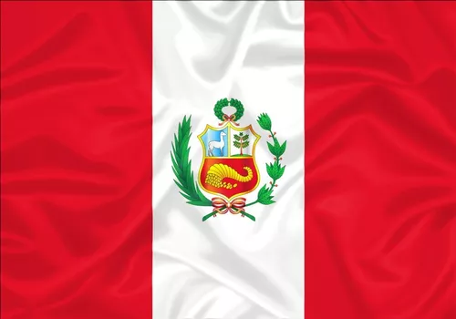

A região do atual Peru era habitada pela civilização inca, a qual foi dominada em 1532 com a chegada dos espanhóis. Ainda no século XVI, a colônia foi elevada a Vice-Reino do Peru. Em 1821, o argentino José de San Martín declarou a independência do país.
O futebol é o desporto mais praticado no Peru, tal como acontece na maioria dos países da América do Sul. Outros desportos populares no Peru incluem: Surf, Tiro, Ténis, Basquetebol, Voleibol.
A culinária do Peru é muito diversa, sendo o resultado da fusão inicial da tradição do antigo Peru, com a cozinha espanhola em sua variante mais fortemente influenciada pela presença dos mouros na Península Ibérica, com importante aporte dos costumes culinários trazidos da costa atlântica da África subsaariana por escravos negros.
O idioma oficial do Peru é o espanhol, mas no país falam-se 47 línguas nativas, incluindo o quíchua e o aimará. O quíchua é a segunda língua mais falada no país e era muito usado durante o Império Inca. O espanhol peruano é conhecido por ter um dos dialetos "mais puros" do mundo de língua espanhola.
O clima do Peru tem três tipos diferenciados: árido, tropical (litoral), tropical de altitude (altiplano e cordilheira) e equatorial (trecho amazônico).
O censo de 2007, 81,3% da população com mais de 12 anos de idade descreveu-se como católica, 12,5% como evangélicos, 3,3% de outras denominações e 2,9% como irreligiosos. O governo peruano está intimamente ligado com a Igreja Católica.